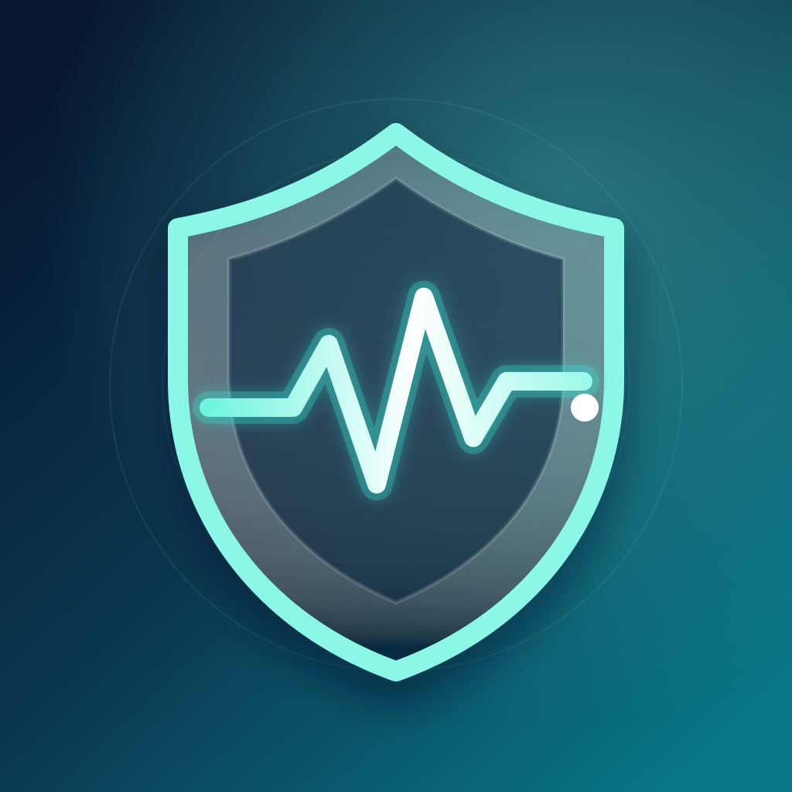

Personal pattern tracking
Notice patterns. Log what happened.
FND Sentinel helps a wearer and caregiver review Apple Watch signals alongside logged episodes. Processing and storage stay on the wearer’s devices.
Private by design: No account. No ads. No analytics. No tracking. No developer server. Your Health data, episode records, and app activity are not sent to William Evans. Nothing leaves the app unless you deliberately create an export and choose where to share it.
Support
Connect Health, learn the watch controls, troubleshoot syncing, and contact support.
Privacy
See how Health data, episode logs, local alerts, exports, and deletion are handled.
Method and limits
Understand the personal baseline, pattern score, retrospective learning, and known uncertainty.
Important: FND Sentinel is a personal pattern-tracking aid, not a medical device, diagnosis, treatment, emergency service, or reliable predictor. Expect missed events and false alerts. Never use it for safety-critical decisions or instead of a clinician-approved care plan. If someone may be in danger, contact local emergency services.